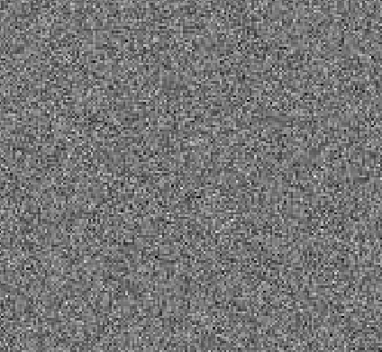
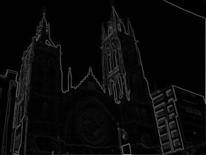
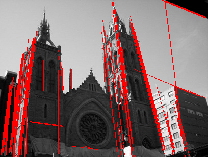

Détection de segments#
L’idée#
Une image aléatoire ressemble à la mire en un temps où la télévision ne rediffusait pas les programmes diurne la nuit.
Dans ce brouillard aléatoire, la probabilité d’avoir des points alignés est très faible, si faible que le simple fait d’en voir est un événement extraordinaire. Trois points alignés ne sont pas rares, quatre un peu plus, cinq encore plus. A partir d’un certain seuil, on peut considérer que trop de points alignés forme une droite et un événement trop rare pour être ignoré. On cherche à détecter les arêtes dans une image comme la suivante.
On calcule le gradient d’une image en noir et blanc.
Puis on extrait les segments en les considérant comme des anomalies par rapport à un champ de pixels aléatoire.
Illustration#
La fonction
detect_segments
lance la détection des segments.
Explications#
La présentation Détection des images dans les images digitales détaille le principe de l’algorithme. L’idée de l’algorithme est assez proche de la transformée de Hough. Celle-ci est implémentée dans le module scikit-image ou opencv.
Bibliographie#
From Gestalt Theory to Image Analysis, Agnès Desolneux, Lionel Moisan, Jean-Michel Morel
An Extension to Hough Transform Based on Gradient Orientation